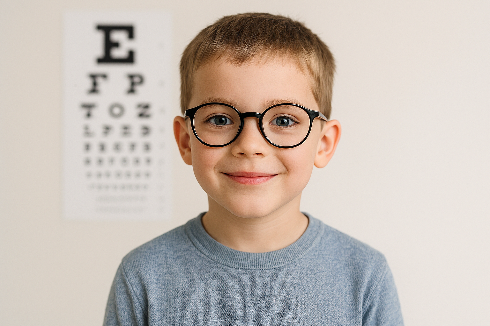
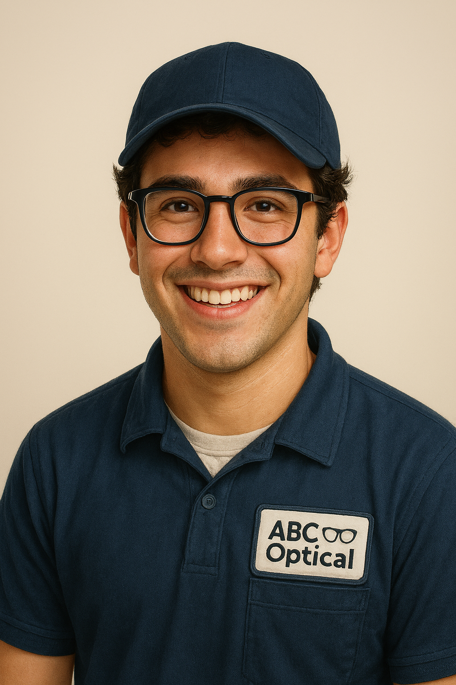
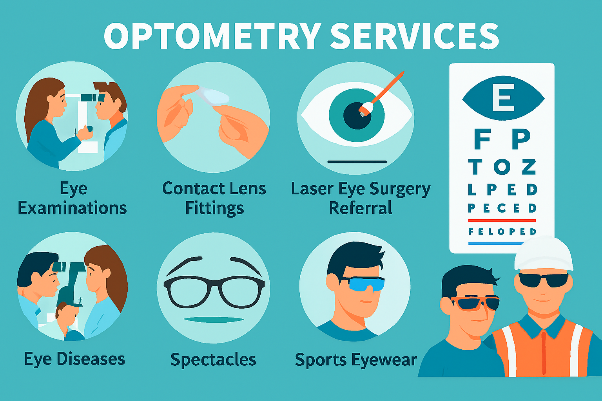
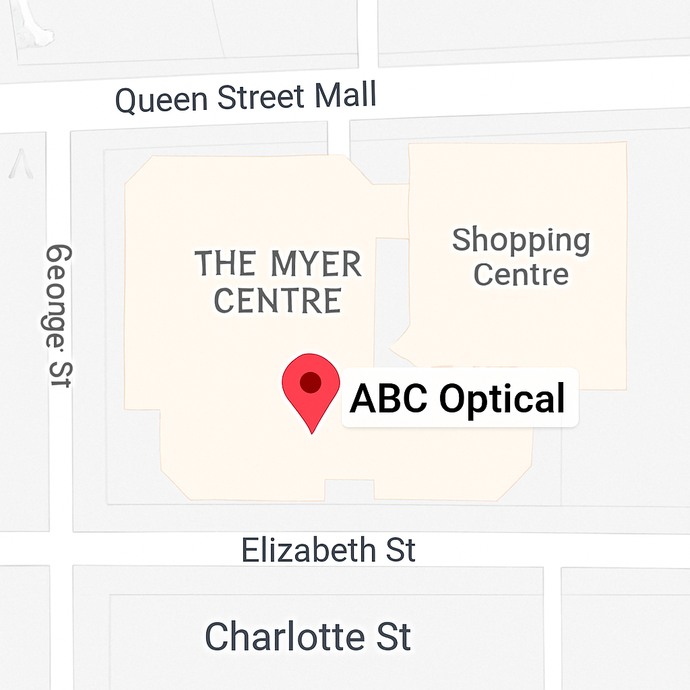

Home
Welcome to ABC Optical!
We are a Brisbane-based optical store specialising in eye care for children and adults.
Our qualified optometrists provide comprehensive eye examinations, contact lens fittings, and a wide range of spectacles and sunglasses. We are dedicated to helping you achieve the best possible vision and eye health in a professional and caring environment.
Every patient receives friendly and personalised care. Our team ensures that customers have a good experience by helping you choose frames and sunglasses that suit your style. Using modern technology, our optometrists detect and manage vision issues early, so whether it’s a first eye exam or a routine check-up, we help you see clearly.
About Us
ABC Optical was founded in 2005 with a mission to provide professional and caring eye care for families
in Brisbane. Over the years, we’ve helped thousands of children and adults see clearly, and our team
continues to grow with a focus on innovation and compassion.
At ABC Optical, our qualified in-store optometrists provide comprehensive eye examinations and
treatments for a wide range of vision concerns, including myopia, astigmatism, presbyopia, glaucoma,
cataracts, and diabetic eye care.

We also specialise in contact lens fitting and management along with advising on the correct use of prescription and non-prescription sunglasses, particularly for children and those involved in sports.
Services

At ABC Optical, we offer a complete range of optometry services tailored for both children and adults. Our thorough eye examinations assess every aspect of your vision and overall eye health, using advanced diagnostic equipment to ensure accurate results.
We test for common eye conditions such as glaucoma, cataracts, macular degeneration, and diabetic eye disease, allowing for early detection and management. Our assessments also include checks for colour vision, clarity of sight, focusing ability, and eye muscle coordination to ensure comfortable and balanced vision.
For younger patients, we carefully screen for amblyopia (lazy eye) and other developmental vision problems that can affect learning and everyday activities. Our goal is to provide clear, healthy vision for life — through expert care, modern technology, and a friendly, family-focused approach.
Location
We are conveniently located in The Myer Centre, Level 1, Shop 36, Queen Street Mall, Brisbane. Our
central location makes it easy for you and your family to access high-quality eye care in the heart of
the city. We are close to major bus and train stations, with parking available nearby, and our clinic is
fully wheelchair-friendly.

Visitors can park in the Myer Centre car park, with short-term and long-term options available. Street parking is also available around Queen Street Mall.
Hours
ABC Optical is open during the following trading hours for your convenience:
Monday – Thursday: 9:00 AM – 5:30 PM
Friday: 9:00AM - 9:00PM
Saturday: 9:00 AM – 5:00 PM
Sunday: 10:00 AM – 5:00 PM
Our extended Friday hours ensure that even the busiest families can schedule an eye exam without
rearranging their week. We also offer flexible appointment times for children before and after school,
making it easier to fit eye care into your family’s schedule.
Appointments are recommended for eye examinations, but walk-ins are welcome for glasses fittings and
contact lens consultations. We offer flexible appointment times before and after school for children.
Contact Us
Call us today to book your appointment!
Contact Number: 07 3256 7101
Email: contact@abcOptical.com.au
We’re happy to answer any questions or schedule an appointment. Our friendly team is here to help you
with all your eye care needs.
To keep up with our latest news, keep up with us on Social Media!